02 — Capsule
Quale alterego
indossi oggi?
T-shirt oversize con una frase stampata sul retro. Sei slogan, due colorway: bianco con stampa nera, nero con stampa bianca. Fotografate contro un muro di cemento — l'opposto del minimal luxury delle altre linee.
Il concetto
Sei slogan,
sei voci.
Sei grafiche, sei modi di scrivere. Non è disordine grafico: è il senso della capsule.
Un grotesque bold non dice le cose come le dice un didone ad alto contrasto. Un brush marker urla dove una script manoscritta sussurra. Se ogni persona porta dentro un alter ego diverso, ognuno deve avere la sua voce — e la voce, su una maglia, è il carattere con cui è scritta.
La stampa sta sempre sul retro: per questo tutte le foto sono di schiena. La frase non la vedi tu, la vede chi ti guarda andare via.
- 01 Ti ho mai deluso?
- 02 Non vedo errori
- 03 Se non è amore, è gin tonic
- 04 No perditempo, vado a pagamento
- 05 Il Karma è come il 69, prendi ciò che dai
- 06 Se mi guardi mi innamoro
Colorway 01
Bianca,
stampa nera.
Sei pezzi, sei frasi. Taglio oversize, spalla scesa, stampa sul retro.
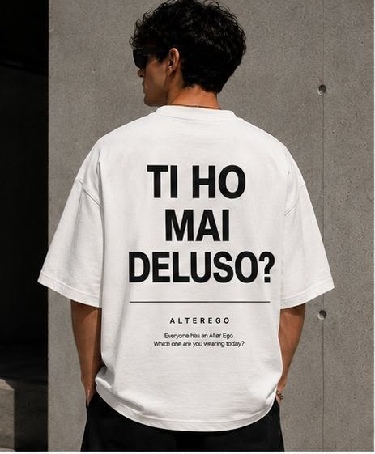
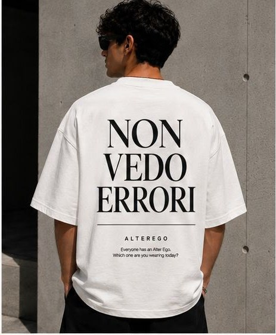
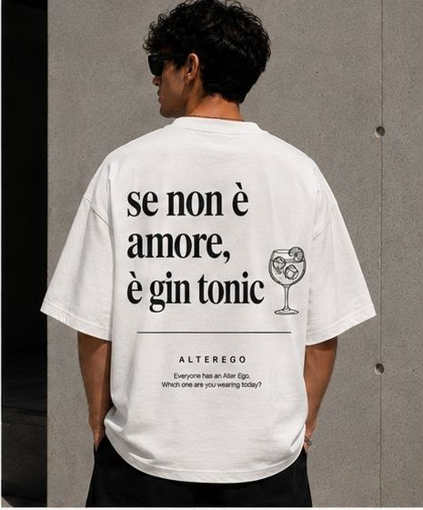
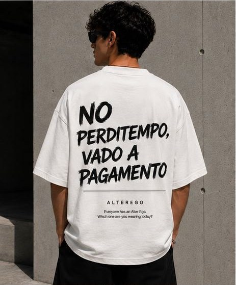
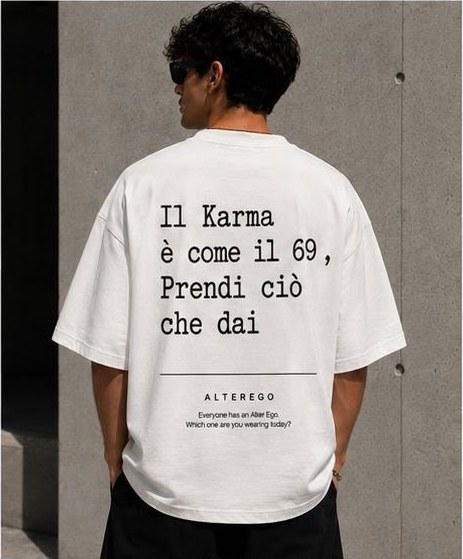
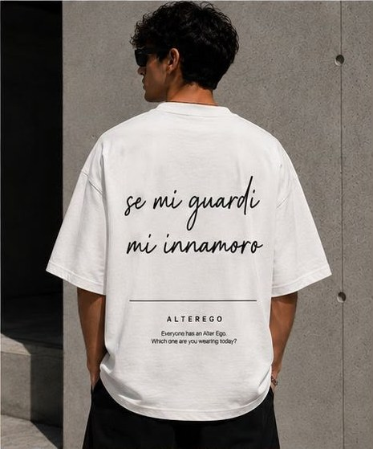
Colorway 02
Nera,
stampa bianca.
Lo stesso set, invertito. Total black dalla maglia ai pantaloni: resta solo la frase a fare rumore.
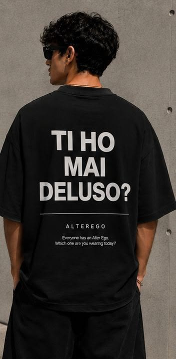
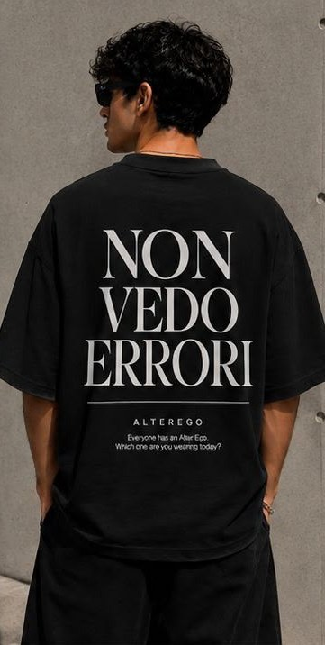
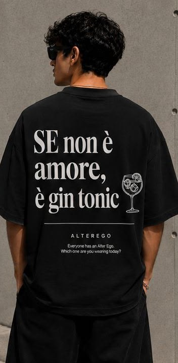
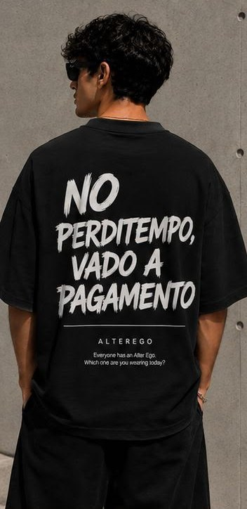
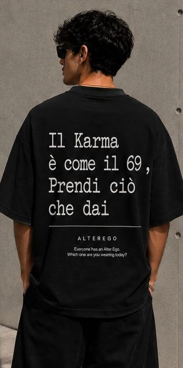
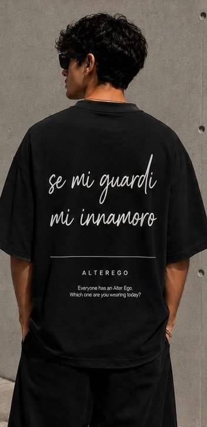
Everyone has an Alter Ego.
Which one are you wearing today?
Disponibilità
Scegli la tua frase.
La capsule esiste in sei grafiche e due colorway. Scrivici per sapere quali pezzi sono disponibili, o per vedere la capsule dal vivo.